Inhalt Index DeskTop Bronstein

 Funktionalanalysis Metrische Räume Vollständige metrische Räume Einige Anwendungen des Kontraktionsprinzips
Funktionalanalysis Metrische Räume Vollständige metrische Räume Einige Anwendungen des Kontraktionsprinzips


Die FREDHOLMsche Integralgleichung 2. Art
| 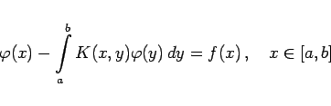 | (12.66) |
mit stetigem Kern K(x,y) und stetiger rechter Seite f(x) kann man iterativ lösen, indem sie mit Hilfe des Operators 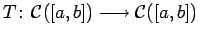, definiert durch
in ein Fixpunktproblem 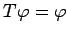 im metrischen Raum  (s. Beispiel J) überführt und der Fixpunktsatz angewendet wird, vorausgesetzt, es gilt 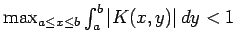. Die eindeutige Lösung erhält man als gleichmäßigen Grenzwert der Iterationsfolge 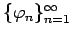 mit 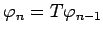, beginnend mit einer beliebigen Funktion 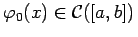.
(s. Beispiel J) überführt und der Fixpunktsatz angewendet wird, vorausgesetzt, es gilt 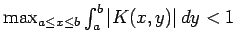. Die eindeutige Lösung erhält man als gleichmäßigen Grenzwert der Iterationsfolge 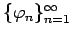 mit 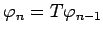, beginnend mit einer beliebigen Funktion 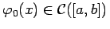.